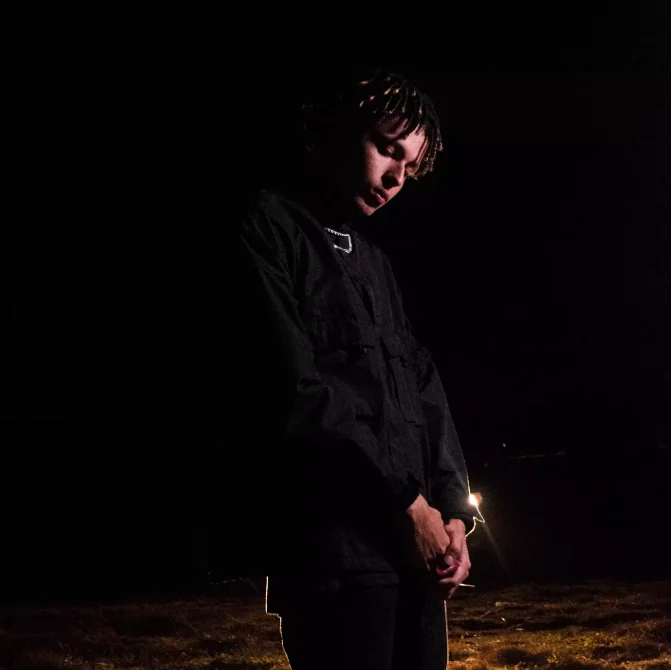

Chapter 01 / Curiosity Observe
I follow the question.
Curiosity is where my work starts: looking closer, learning fast and staying open long enough to find a better path.
- Curiosity
- Learning
- Evolution

Available for roles + freelance
ContactI build clear, responsive web products where interface craft and dependable engineering reinforce each other.
Portfolio / 2026
React · Next.js · Node.js
A way of seeing / Profile
Chapter 01 / Curiosity Observe
Curiosity is where my work starts: looking closer, learning fast and staying open long enough to find a better path.

Chapter 02 / Intent Understand
Before choosing a stack, I look for context, constraints and the real need. Good code begins with a clear reason to exist.

Chapter 03 / Craft Connect
I am drawn to the point where visual care, intuitive use, performance and dependable engineering become one product.

Chapter 04 / Method Refine
Clear structure, honest communication and careful finishing are not polish added later. They are part of how I build.

Chapter 05 / Rhythm Listen
I play guitar, have worked with voice and released songs on Spotify. Music taught me that rhythm, pause and intention shape every experience.
Chapter 06 / Range Move
Based in Brazil and available remotely, I am open to national and international teams where I can contribute, collaborate and keep growing.


Curiosity comes before certainty. I stay with the question long enough to understand what the product truly needs.

Visual clarity, intuitive use and maintainable engineering work as one system—not separate finishing layers.
I connect interface, performance and dependable code so each decision supports the next.

Music, guitar and voice sharpen my sense of timing, contrast and pause—qualities I also bring to digital experiences.

Available for remote collaboration with national and international teams, ready to contribute, learn and evolve together.
Professional signal / Active
Real projects, owned responsibilities and a practice spanning interface, code and release.
View the 3 projectsOpen to remote teams and new challenges.
03
Solar energy, healthcare and an agricultural catalog platform.
↘2026
Systems Analysis & Development / UNIP
Selected work / 03 builds
Three freelance projects spanning lead generation, accessible healthcare communication and a complete content management platform.
Full-stack freelancer / Institutional landing page
A lead-focused website for a solar-energy company, balancing a premium identity with technical SEO, speed and mobile clarity.
Discuss this workFront-end freelancer / Healthcare website
A multidisciplinary clinic website built around accessible communication, intuitive navigation and conversion through WhatsApp.
Discuss this workFull-stack freelancer / Management platform
A full platform for brokers to manage and publish agricultural machinery, with authentication, administration and a scalable data layer.
Discuss this workCapabilities / Interface to infrastructure
A working stack for designing, building, publishing and evolving responsive web products.
HTML5 · CSS3 · JavaScript ES6+ · TypeScript · React · Next.js · Vite
Node.js · REST APIs · Supabase · SQL · PostgreSQL
Git · GitHub · GitHub Actions · Vercel · GitHub Pages
Responsive UI · Accessibility · Motion · Performance · SEO · Figma
Path / Practice + education
Experience01
I work across requirement discovery, application architecture, interface development, performance, SEO, deployment and continuous evolution.
Education02
Degree focused on modern web development, application architecture, high-quality interfaces and software-engineering practices. Expected completion: December 2026.
Open to conversations
Contact / Start a conversation
Hiring for a junior front-end or full-stack role? Need a thoughtful freelance build? Tell me what the product needs to do.
THALLES LEAL
PORTFOLIO / 2026